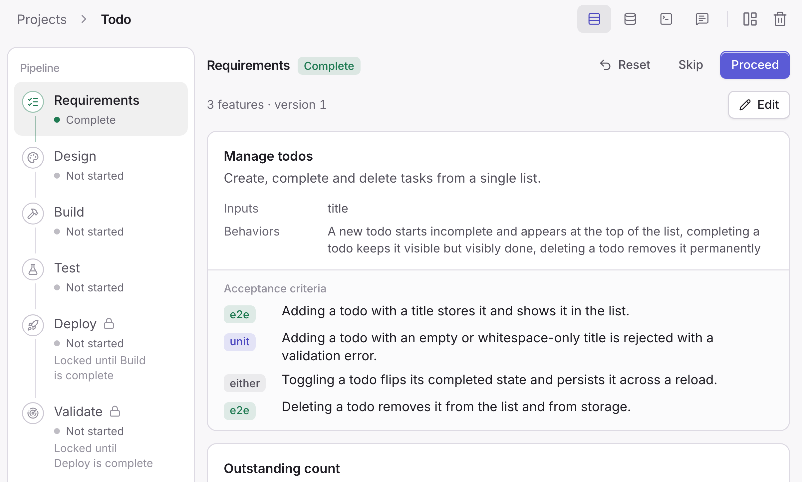

Introduction
An LLM can now generate a web app in minutes. Knowing that the app works, and knowing when to stop fixing it, is still hard.
- Asking a model to keep improving its own code can make the code less secure. (Shukla et al., 2025)
- Fewer than 1 in 3 model-generated infrastructure deployments succeed on the first attempt. (Zhang et al., 2026)
- Most of a repair loop's gain arrives in the first 1–3 rounds; later rounds mostly spend tokens. (Kiecker et al., 2026; Arimbur, 2026)
- Developers steer coding agents closely rather than hand over control. (Huang et al., 2025; Tang et al., 2026)
| Research repair agents | LLM test / repair tools | Prompt-to-app builders | ForgeFlow | |
|---|---|---|---|---|
| Repair with an iteration cap and stall detection | ✕ | ✕ | ✕ | ✓ |
| Hands back to a person when repair stalls | ✕ | ✕ | ✕ | ✓ |
| Requirements compiled into traceable tests | ✕ | partial | ✕ | ✓ |
| Automated cloud deployment | ✕ | ✕ | ✓ | ✓ |
| Re-tests the deployed, live URL | ✕ | ✕ | ✕ | ✓ |
| Any stage can be skipped or revisited | ✕ | ✕ | partial | ✓ |
ForgeFlow takes a web-app idea, given as screenshots or a structured spec, to a live URL that has been tested, and lets a person enter, refine or skip any stage on the way.
Objectives & Aims
- Non-linear control. No stage is mandatory; every artifact is versioned and can be revisited.
- Generation. Screenshots or a spec become a full-stack app on one fixed stack.
- Requirements to tests. Acceptance criteria compile into unit and E2E tests, each traceable to its criterion.
- Bounded self-healing repair. A diff-aware loop with caps, stall detection and escalation to a person. (Core contribution)
- Infrastructure reasoning. Work out what each app needs, then deploy it.
- Live validation. Re-test the deployed URL; repair and redeploy on failure.
- Isolation. Generated code runs only in a per-project sandbox.
- Measurement. First-pass vs. post-repair success, cost and latency, reproducibly.
- H1
- Bounded repair captures most of the achievable gain at a fraction of an unbounded loop's cost.
- H2
- A minimal, diff-aware context repairs more per token than broad repository context.
- H3
- Re-testing the live URL catches faults that sandbox tests miss.
Methodology
Why a diff: generated tests lose validity when code changes, and highlighting the change is the recommended fix (Haroon et al., 2026). Why a cap: most gain comes in the first rounds (Kiecker et al., 2026).

Results & Conclusions
One model (GLM-5.3-flash) through ForgeFlow's own model interface; one reproducible run, 2 Oct 2026. Problems from HumanEval (Chen et al., 2021), MBPP (Austin et al., 2021) and HumanEval-TS (Cassano et al., 2023).
- Repair pays where a failing test reaches the code: 13 of 19 first-attempt failures fixed for 5.7% more model calls, and the guards, not the cap, ended every unproductive run.
- It knows when to stop: all 580 problems and both apps ended with a recorded, typed reason, and each unmet criterion traces to a failing test.
- H1 supported
- at function level; one model, one run
- H2 not yet tested
- context-ablated arm still to run
- H3 qualitative
- e.g. a database URI that failed only once deployed
References (APA)
- Arimbur, J. J. (2026). How many tries does it take? Iterative self-repair in LLM code generation across model scales and benchmarks (arXiv:2604.10508). arXiv.
- Austin, J., Odena, A., Nye, M., et al. (2021). Program synthesis with large language models (arXiv:2108.07732). arXiv.
- Cassano, F., Gouwar, J., Nguyen, D., et al. (2023). MultiPL-E: A scalable and polyglot approach to benchmarking neural code generation. IEEE Transactions on Software Engineering, 49(7), 3675–3691. https://doi.org/10.1109/TSE.2023.3267446
- Chen, M., Tworek, J., Jun, H., et al. (2021). Evaluating large language models trained on code (arXiv:2107.03374). arXiv.
- Haroon, S., Khan, M. T., & Gulzar, M. A. (2026). Evaluating LLM-based test generation under software evolution (arXiv:2603.23443). arXiv.
- Huang, R., Reyna, A., Lerner, S., et al. (2025). Professional software developers don't vibe, they control: AI agent use for coding in 2025 (arXiv:2512.14012). arXiv.
- Kiecker, T., Reichmann, E., Kang, H., et al. (2026). Is three the magic number? An empirical evaluation of LLM-based repair loops (arXiv:2607.05197). arXiv.
- Patil, S. G., Mao, H., Yan, F., et al. (2025). The Berkeley Function Calling Leaderboard (BFCL): From tool use to agentic evaluation of large language models. In Proc. 42nd International Conference on Machine Learning (ICML), PMLR 267.
- Shukla, S., Joshi, H., & Syed, R. (2025). Security degradation in iterative AI code generation: A systematic analysis of the paradox. In Proc. 2025 IEEE International Symposium on Technology and Society (ISTAS) (pp. 1–8). https://doi.org/10.1109/ISTAS65609.2025.11269659
- Tang, N., Chen, C., Xu, G., et al. (2026). How coding agents fail their users: A large-scale analysis of developer-agent misalignment in 20,574 real-world sessions (arXiv:2605.29442). arXiv.
- Zhang, T., Pan, S., Zhang, Z., et al. (2026). Deployability-centric infrastructure-as-code generation: Fail, learn, refine, and succeed through LLM-empowered DevOps simulation. In Proc. ACM International Conference on the Foundations of Software Engineering (FSE).
Acknowledgement
We thank our guide, Dr. Payal Kadam, whose questions about what the system could actually demonstrate shaped its design and how we report results; Dr. Sonali Kothari, Head of the Department of CSE, for facilities and support; and the faculty who reviewed our progress and invention disclosure.
Outcome of the Project Work
Try it live
Scan to open the deployed platform.
No industry collaborator on this project.